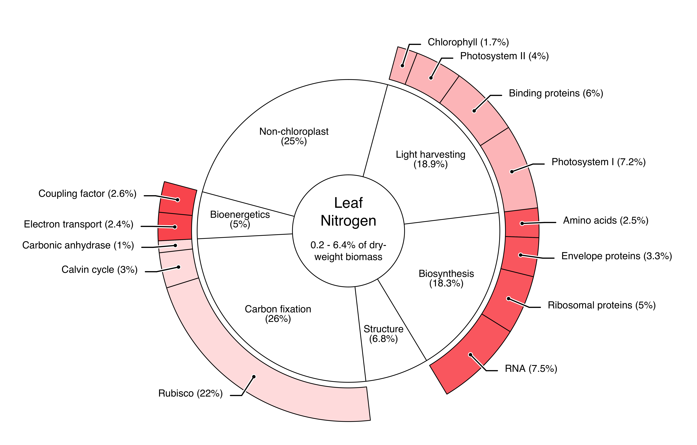

1 Background
1.1 Almond production in California
The United States of America is by far the world’s largest producer of almonds (Prunus amygdalus Batsch) with a production share of roughly 80% (CDFA 2020). Almost all of this production takes place in the state of California, whose Mediterranean climate and well-developed water infrastructure make it possible to grow the crop commercially, even though almonds are not native to the state (Bjerga et al. 2018). Almond trees have an average life span of 20 to 25 years, whereby it typically takes three to four years for a tree to begin producing fruits. The almond trees in California begin blooming mid-February through March and harvest takes place in October before the wet season starts. The crops are alternate bearing, which means that strong harvests are succeeded by weaker ones in the following year (WIFSS 2016).
One could argue that the expansion of its almond industry is California’s biggest agricultural success story (Bruno et al. 2021). Over the last three decades, the production volume increased almost eight-fold: the state produced about 1.27 million tons of almonds on 408’000 ha in 2020 (USDA 2021). The majority of the growing sites stretch along the Central Valley, most notably the counties Fresno, Kern, Stanislaus, Merced, and Madera (Figure 1.1). The economic value of Californian almond production sums up to a staggering 5.62 billion U.S. dollars annually. Thus, almonds rank third place among California’s agricultural commodities, trailing only the dairy and grape industries (Bruno et al. 2021).
This immense production comes at a cost. California is a comparatively dry state, where agriculture uses around 40% of the total available water supply — although that percentage varies dramatically between wet and dry years (Mount and Hanak 2016). It is estimated that Californian almond orchards alone use approximately 10% of the state’s water supply (Holthaus 2015). The scarcity of water is only expected to increase due to reduced amount of snowpack in the Sierras, depleting groundwater levels and climate change — the California Department of Water Resources expects a 10% reduction in water supply by 2040 (DWR 2022). Although discerning strong trends from climate projections is difficult, a drying trend for the Sacramento River Basin during the 21st century is observed through different climate scenarios developed (DWR 2015). As a consequence to these environmental changes, almond yields are predicted to decrease in the coming decades (Pathak et al. 2018).

These trends are likely to increase the economic pressure on almond farmers and provide incentives to take up water-saving measures. While some older orchards in California may still be irrigated using flood irrigation, 85% of the orchards use low-volume irrigation, which is much preferable for water conservation (ABC 2020). In addition to that, some farmers already adopted the use of remote sensing for a more resourceful irrigation, either using water-stress-specific vegetation indices or thermal imaging (Ihuoma and Madramootoo 2017, ABC 2020, Ceres Imaging 2022, VineView 2022).
Another serious problem stemming from the intensive agriculture in California is nitrogen leaching due to over-fertilization. The subsequent excesses of nitrate in water resources have been found to contribute to environmental degradation in the state (Viers et al. 2012). For almond orchards, it is officially recommended to apply nitrogen in four rates: 20% of the total annual application at the end of the blooming stage, 30% during fruit growth, 30% during kernel fill and at last, 20% after the hull-split or after harvest (Brown et al. 2020). Thereby, it is not uncommon in intensive almond orchards to apply up to 300 kg nitrogen per hectare and year (Smart et al. 2014), although the Almond Board of California (ABC) states that the fertilization should consider both the almond tree’s age as well as the expected kernel yield (Brown et al. 2020). As such, recommendations for best management practices range between 130 and 285 kg nitrogen per hectare and year. Thus, under a new regulation of the Californian state to avoid environmental contamination, farmers are required to apply nitrogen fertilizations appropriately (Zhang et al. 2019).
1.2 Challenges with balancing crop nitrogen
Nitrogen (\(\text{N}\)) is a vital element for plant growth. It is essential for the plant’s metabolism and is found in proteins, nucleic acids, chlorophyll, co-enzymes, phytohormones, and secondary metabolites. Plants take up nitrogen in the form of ammonium or nitrate and convert it into amino acids, either in their roots or shoots. Once inside the plant, nitrogen is transported as nitrate or amino acids (Hawkesford et al. 2012). The use of synthetic nitrogen fertilizers has drastically increased since the green revolution and has been a major driver for higher food production (Vitousek et al. 1997). However, the recovery of nitrogen from these fertilizers by plants is rather low and rarely exceeds 50% of the fertilizer input (Raun et al. 1999). The proportional uptake by plants is usually even lower in the case of organic fertilizers when compared to mineral fertilizers (Webb et al. 2013).
The resulting loss of nitrogen from agricultural systems negatively impacts non-agricultural systems, such as terrestrial, ground, and freshwater ecosystems. Through leaching, nitrogen can move to other ecosystems in the form of nitrate (\(\text{NO}_3^-\)) and cause eutrophication of surface water or contamination of drinking water (Kapoor and Viraraghavan 1997, Yang et al. 2008). Agricultural production also contributes heavily to the emission of gaseous nitrogen in the form of ammonia (\(\text{NH}_3\)), molecular nitrogen (\(\text{N}_2\)) or nitrogen oxide (\(\text{NO}_2\)) and nitrous oxide (\(\text{N}_2 \text O\)), the latter two of which are greenhouse gases and thus accelerate climate change (Stark and Richards 2008). On the other hand, nitrogen deficiency negatively affects crop yields both in terms of quantity as well as quality. Therefore, there is also a substantial economic interest to continuously monitor the nitrogen status of crops during all growth stages (Baret et al. 2007, Hank et al. 2019).
Foliar nitrogen concentrations vary a lot among plant species, phenological stages and environmental conditions, ranging between 0.2 to 6.4% of the leaf dry weight (Wright et al. 2004). The optimal nitrogen concentration in almond leaves lies between 2.2 and 2.5%—the exact value depends on the time and the targeted yield (Micke 1996). In C3 plant leaves, nitrogen is indispensable for photosynthesis, biosynthesis, carbon fixation and bioenergetics, since is a crucial element to both proteins and chlorophyll a and b (Figure 1.2). Chlorophyll is a key component in the light harvesting process of plants and its porphyrin core contains four nitrogen atoms, which act as a stabilizer of the central magnesium ion (Evans 1989). However, in C3 plants, chlorophyll a and b only bind 1.7% of the total leaf nitrogen (Chapin et al. 1987). Precise knowledge of the nitrogen concentration in plant leaves can be used for a more targeted fertilization and might even pave the way for variable rate fertilization (Guerrero et al. 2021). For example, one might consider the nitrogen nutrition index (NNI) introduced by Justes et al. (1994).
\[\text {NNI} = \frac{\text {N}_\%}{\text {N}_\text{crit.}} \tag{1.1}\]
Here, N% is the measured nitrogen concentration and Ncrit. the critical nitrogen concentration. If NNI \(\geq\) 1, the crop is sufficiently (or even excessively) provided with nitrogen. Vice versa NNI \(<\) 1 implies a nitrogen deficiency. Unfortunately, the retrieval of information about the foliar nitrogen concentration via chemical analyses is generally labour and cost intensive and thus not fit for monitoring the nitrogen concentration in plants throughout their seasonal development (Berger et al. 2020). This calls for surrogate strategies of estimating the foliar nitrogen concentration — for example via remote sensing. Remote sensing of crop nitrogen for more adequate fertilization is in fact one of the core promises of precision agriculture and smart farming (Zhang et al. 2002, Walter et al. 2017, Sishodia et al. 2020).

1.3 The role of remote sensing in precision agriculture
According to Pierce and Nowak (1999), precision agriculture involves using various technologies and principles to address the spatial and temporal variability in all elements of agricultural production, with the ultimate goal of enhancing crop performance and maintaining environmental quality. As such, precision agriculture is a part of smart farming, which aims at the optimization of agricultural systems driven by digitally available information (Wolfert et al. 2017). A core driver of precision agriculture is the increasing availability of remotely sensed data as well as the means of analyzing this data (Sishodia et al. 2020). Remote sensing describes the process of acquiring information about properties of an object without physical contact to said object, i.e., the attempt to measure something from distance rather than in situ (Schowengerdt 2006). This type of data is typically measured by satellites, aircraft, or unmanned aerial vehicles (Sishodia et al. 2020).
For numerous agricultural applications, remote sensing focuses on measuring the electromagnetic radiation reflected or emitted from the Earth’s surface, primarily the reflection of sunlight in the visible and near-infrared spectrum (Jafarbiglu and Pourreza 2022). Sensors more effectively capture signals in the visible light spectrum between 380 and 750 nm wavelength because the electromagnetic radiation of the sun is the peaking there, whereas it tapers off in the ultraviolet and near- to short-wave-infrared regions (Figure 1.3, A).
The intensity of this electromagnetic radiation — its flux density — is typically measured in watts per square metre (W m−2, ISO 2022). If this radiation is received by a physical object, it is referred to as irradiance, if it is emitted by the object, it is called radiance. The spectral irradiance and radiance on the other hand are a measure of irradiance or radiance over a specific range of wavelengths (or frequencies) rather than across the entire electromagnetic spectrum, and thus typically measured in watts per square metre per nanometre (W m−2 nm−1, ISO 2022). The solar irradiance measured at a particular time and location depends on many parameters such as the solar incidence angle, the height above mean sea level, or the current atmospheric conditions (Blumthaler et al. 1997, Stickler and Kyle 2016). Because of that, remote sensing applications do not directly analyse the radiance — which is just as dependent on those parameters as the irradiance — but rather the so-called reflectance (\(\rho\)). Reflectance is the share of electromagnetic radiation which is reflected by a body. Consequentially, the spectral reflectance is defined as the ratio between the spectral radiance \(\Phi_{\text e, \lambda} ^\text r\) and the spectral irradiance \(\Phi_{\text e, \lambda} ^\text i\) (ISO 2022).
\[\rho_\lambda = \frac{\Phi_{\text e, \lambda} ^\text r}{\Phi_{\text e, \lambda} ^\text i} \tag{1.2}\]
At which exact wavelengths \(\lambda\) this reflectance is calculated depends on the available data. Data from an ordinary digital camera usually covers three bands: red (620-740 nm), green (500-560 nm), and blue (450-490 nm), which is why it is referred to as RGB imagery (Bruno and Svoronos 2005). In contrast to that, multispectral images are a type of remotely sensed data that consist of more than three bands beyond just the visible spectrum. For agricultural purposes, multispectral imagery typically combines RGB imagery with bands in the near-infrared spectrum (Hagen and Kudenov 2013). Because the infrared spectrum will be quite important within the scope of this thesis, I will often refer to certain subgroups of that range: near-infrared (NIR, 750-1400 nm), short-wavelength-infrared (SWIR, 1400-3000 nm), mid-wavelength infrared (MWIR, 3-8 \(\mu\)m), long-wavelength infrared (LWIR, 8-15 \(\mu\)m) and far infrared (FIR, 15-1000 \(\mu\)m, Byrnes 2009).
When incorporating numerous additional spectral bands into the imaging process, it is referred to as hyperspectral imaging. Hyperspectral images (HSI) usually consist of hundreds of narrow, contiguous wavelength bands, which together with the spatial resolution form a hypercube \(\mathbf X \in \mathbb R^{w \times l \times d}\) with the width \(w\), length \(l\) and the depth \(d\) (that is the number of spectral bands). The high spectral resolution is the main advantage of hyperspectral imaging, it is what allows for the detailed analysis of the chemical and physical properties of the imaged surface (Bioucas-Dias et al. 2013). This high spectral resolution however stands in a trade-off relationship with the spatial resolution, which is why hyperspectral imaging usually yields a lower spatial resolution than multispectral imaging (Yokoya and Iwasaki 2013). Sometimes, the continuous information about an object’s reflectance found solely in the spectral dimension of hyperspectral images is also referred to as its spectral signature. A very important property of the spectral dimension of hyperspectral images is the strong autocorrelation among spectral bands, which is expressed in extremely non-diagonal covariance matrices (Camps-Valls et al. 2011).
In order to to capture hyperspectral images, specialized hyperspectral cameras are used. They typically consist of a spectrograph, which separates the incoming light into its individual wavelength bands, and of an array of detectors that measure the intensity of the light in each band (El Masry and Sun 2010). The spectrograph and detectors are combined into a single, integrated unit, which is mounted on the carrying platform. These sensors work well in the visible spectrum, but the quality starts to drop in the near-infrared region and especially in the short-wave-infrared region (after 900 nm wavelength, see figure 1.3).
There are several reasons for this. One reason is that the near-infrared and short-wavelength infrared regions are typically characterized by lower levels of radiance compared to the visible light spectrum, which can make it difficult to obtain high-quality, noise-free data. In addition, the short-wavelength infrared region is often affected by atmospheric absorption of different gases, especially water vapour, which can cause the signal strength to vary significantly depending on the atmospheric conditions (Figure 1.3 A). This noise is sometimes removed using atmospheric correction algorithms (Gao et al. 2009). A third challenge in the short-wavelength infrared region is the need for specialized detectors that are sensitive to the wavelengths of light in this region. These detectors are typically made of alloys such as indium gallium arsenide or mercury cadmium telluride, which are more expensive and less sensitive than the detectors used in the visible and near-infrared regions (Ciani et al. 2020, Dyson 2021).
Due to these reasons, hyperspectral imaging of sufficient quality is often limited to the visible- and near-infrared spectrum. Acquiring exact spectral information in the short-wave-infrared spectrum is mostly reserved to spectroradiometric measurements, although this starts to change with the advancement of hyperspectral sensors (Weber et al. 2016).
1.4 Remote sensing of nitrogen
The first attempt to directly model crop nitrogen based on spectrophotometrically measured reflectance data has been made by Thomas and Oerther (1972), who worked on sweet potatoes. The authors stated:
“The regression equation at the 550 nm wavelength suggests that near the 4% nitrogen level a 1% change in reflectance would change the predicted nitrogen content by 0.2%.”
In other words, they proposed a simple linear regression model (on logarithmically transformed variables) to quickly estimate the nitrogen concentration — solely based on the reflectance at 550 nm wavelength. Back then, this relationship had to be found by calculating all band-wise correlations and simply choosing a suitable band for the regression. Ever since, much more advanced methods of modelling crop nitrogen have been developed. There are many ways to divide the modelling approaches into groups. For example, Verrelst et al. (2019) proposed grouping the methods in parametric, non-parametric, physics-based and hybrid methods. Berger et al. (2020) followed up on that division, but further distinguished between linear and non-linear methods — which they equate to the terms chemometrics and machine learning.
However, the terms parametric and non-parametric as used by Berger et al. (2020) collide with pre-occupied definitions in the field of machine learning. Furthermore, the formal definition of machine learning also applies to many of the other groups proposed by the authors. Therefore, I will use the following simplified classification throughout this thesis:
- Hand-crafted features
- Machine learning
- Radiative transfer models
The primary distinction between the first two methods lies in how the bands which are used to make predictions are selected. Hand-crafted features describe all methods which select a subset of bands or a mathematical combination thereof (as in the case of vegetation indices) which is made prior to the fitting of the regression model. Thereby, the band selection happens according to a certain imposed logic, or according to what is already used in the scientific literature. In contrast to that, the models classified as machine learning have access to the entire data, i.e., all available bands. The model automatically learns which bands or combinations of bands are the most important for accurately predicting crop nitrogen without prior information or manual feature engineering. Radiative transfer models, conversely, are primarily designed to simulate the detailed physical processes governing the transport of light and its interaction with a leaf or canopy. As a result, these models incorporate a substantial amount of prior knowledge. At this point, it is important to acknowledge that ultimately, these classifications possess a degree of arbitrariness and exhibit considerable overlap in their respective methodologies.
All three listed methods have been explored in the scientific literature, but not in comparable detail. Berger et al. (2020) found that 78 out of 125 evaluated studies that aimed to predict crop nitrogen via remote sensing relied on vegetation indices. Out of these, only a few studies have highlighted the limitations of indices-based approaches, such as their limited transferability to different sites. The studies mostly relied on the empirical relationship of certain vegetation indices to the chlorophyll content of crops, which in turn is related to nitrogen (Peñuelas et al. 1994, Baret et al. 2007). The application of machine learning for crop nitrogen estimation was also investigated by numerous studies, where the most often applied model was the partial least squares regression model. Radiative transfer models on the other hand have only been used in three studies for modelling crop nitrogen (Berger et al. 2020).
Crop nitrogen or nitrogen content are both ambiguous terms, although very commonly used in the scientific literature. Ever since Thomas and Oerther (1972) pioneered remote sensing of nitrogen, the focus lied on two different measurements: mass- and area-based nitrogen (Wright et al. 2004). Mass-based nitrogen (N%) is the nitrogen concentration in the leaves, typically relative to the leaf dry weight. Area-based nitrogen (Narea) describes how much nitrogen is present in the biomass over a certain area. The two measures are linked together by the leaf mass per area (LMA), which is a widely used morphological trait that indicates good plant growth and functioning (de la Riva et al. 2016).
\[\text N_{\text{area}} = \text{LMA} \times \text N_{\%} \tag{1.3}\]
The majority of the contemporary studies focus on multi- or hyperspectral data. However, there is still some ongoing research about the usage of broadly available and low cost RGB imagery for predicting nitrogen content in crops, although with no great success (Schirrmann et al. 2016, Zheng et al. 2018, Fu et al. 2020).
Within the visible light spectrum, three types of plant pigments mainly determine the absorption process and thus the leaf colour: chlorophylls, carotenoids, and anthocyanins. Chlorophylls include chlorophyll a and b with their respective absorption bands, while carotenoids (e.g., \(\beta\)-carotene and xanthophyll) and anthocyanins include numerous compounds (Féret et al. 2008). Out of these pigments, only chlorophyll is directly connected to nitrogen. It accounts for roughly 1.7% of total leaf nitrogen, which explains the rather loose Pearson correlation (\(\rho = 0.65 \pm 0.15\)) between the chlorophyll and the nitrogen concentration in leaves (Kokaly et al. 2009, Homolová et al. 2013). It remains to be noted that the Pearson correlation might not be the best metric to compare nitrogen and chlorophyll, as Padilla et al. (2018) have found a second order polynomial model to slightly improve the model fit.
Fully relying on chlorophyll for the remote sensing of crop nitrogen is highly limited and can even be misleading. First, the prediction will always be limited to the correlation between the two traits. Also, the relationship between chlorophyll and nitrogen changes over time, as nitrogen is reallocated from the vegetative organs to reproductive structures during the reproductive stage (Ohyama 2010). Finally, a lack of chlorophyll cannot certainly be ascribed to a nitrogen deficiency but also any other chlorosis-causing nutrient deficiency (Bloem et al. 2005, Asner and Martin 2009).
Due to these reasons, leaf protein content would be a more stable proxy for the foliar nitrogen concentration (Berger et al. 2020). The majority of plant nitrogen is bound to protein (Figure 1.2), thus there is less room for decoupling between the two traits (Kokaly et al. 2009).
1.5 Aims and structure of this thesis
In this master’s thesis, I pursue two primary objectives: First, I aim to gain a comprehensive understanding of the various methods for modelling crop nitrogen, as outlined in the previous section. Second, I search for a model capable of effectively mapping the spectral signature of almond canopies or leaves with their respective nitrogen concentrations, while maintaining generalizability across diverse temporal variations, including different times of the year, distinct years, and varied geographical locations.
With these goals in mind, the thesis is structured as follows: The first part delves into each of the approaches previously introduced. Chapter 2 examines remote sensing of nitrogen using vegetation indices. Chapter 3 is dedicated to selected machine learning algorithms suitable for hyperspectral data analysis. Chapter 4 investigates physics-based radiative transfer models, beginning at the leaf level and progressing to the canopy level.
Please note that this thesis does not include a systematic literature review and, as such, does not claim to be complete with respect of the modelling methods regarded. For instance, the radiative transfer models discussed in chapter 4 represent merely a small subset of the available models. Instead, the primary objective is to understand the underlying principles as well as the distinctions among the three techniques.
This thesis resulted in a collaboration with the Digital Agriculture Laboratory at the University of California, Davis, which is led by Dr. Alireza Pourreza. The lab’s members collected data from a Californian almond orchard prior to my involvement; however, the data was highly unstructured. Consequently, a portion of this thesis’ workload involved cleaning and pre-processing the data, which is described in detail in chapter 5.
The modelling stage is documented in chapter 6, and the model performance results are presented in chapter 7. An in-depth discussion regarding the model’s generalizability and other relevant topics can be found in chapter 8, with concluding remarks in chapter 9.
{kind=link}